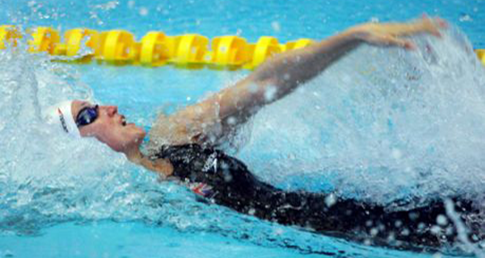

Backstroke or back crawl is one of the four swimming styles used in competitive events regulated by FINA, and the only one of these styles swum on the back. This swimming style has the advantage of easy breathing, but the disadvantage of swimmers not being able to see where they are going. It also has a different start from the other three competition swimming styles. The swimming style is similar to an upside down front crawl or freestyle. Both backstroke and front crawl are long-axis strokes. In individual medley backstroke is the second style swum; in the medley relay it is the first style swum.
